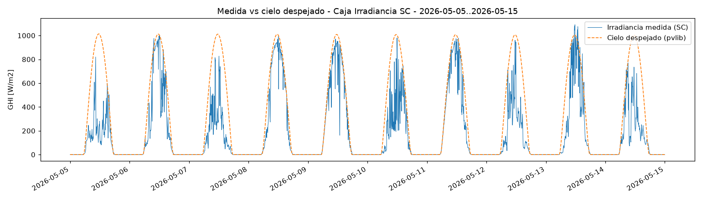
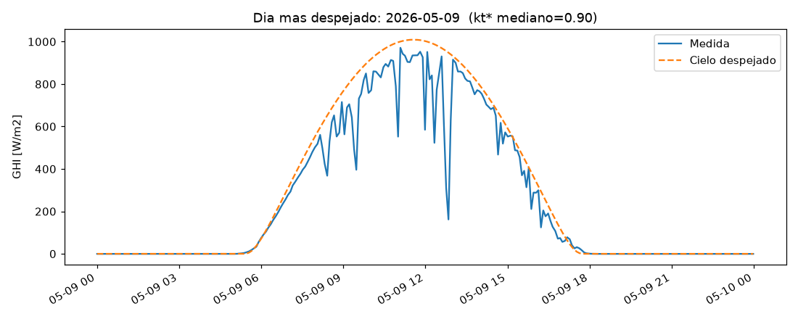
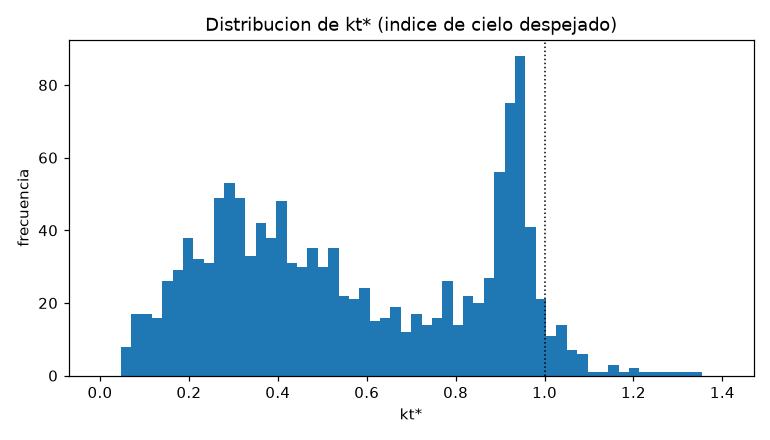
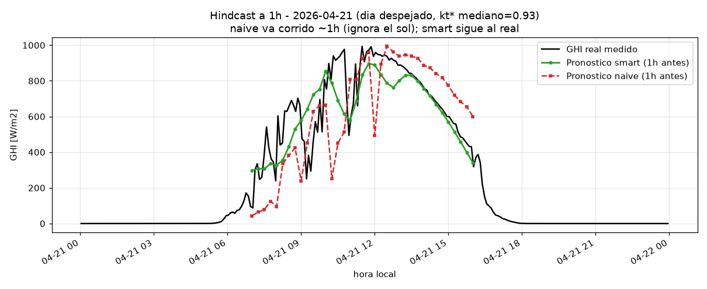
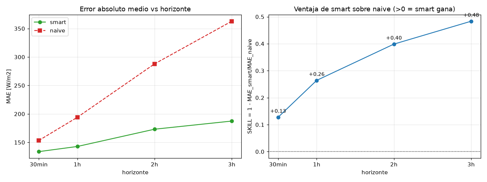

Qué significan las tres imágenes de la validación · proyecto de pronóstico de irradiancia · 2026-06-30
Este documento explica, en palabras sencillas y sin dar nada por supuesto, qué muestran las
tres imágenes que generamos y —lo más importante— por qué las hicimos, para qué sirven y qué
tienen que ver con la vida real. Aunque algo parezca obvio, igual lo explicamos. No hace falta
saber de programación ni de física para entenderlo.
0. Primero: ¿qué estamos midiendo?
La palabra rara del proyecto es irradiancia. Significa algo muy simple: cuánta energía del
sol está cayendo sobre un pedazo de suelo, en este momento. Se mide en vatios por metro cuadrado,
que se escribe W/m² (imagina cuántos "focos de luz" caen sobre una baldosa de un metro por un
metro).
💡 En la vida real: al mediodía de un día despejado caen unos 1000 W/m²
—como diez focos potentes sobre esa baldosa—. De noche caen 0. Con nubes, algo intermedio. Cuanta más
irradiancia, más electricidad hace un panel solar y más luz reciben los cultivos. Por eso, saber
cuánta luz habrá dentro de unas horas ayudaría a planear la energía y el riego.
El aparato que la mide se llama piranómetro (un sensor que "cuenta" la luz del sol). En el sitio
de San Carlos hay uno guardando un dato cada 5 minutos. Esos datos son la materia prima de todo.
1. El "techo" del día: el cielo despejado
Hay una parte del sol que es 100 % predecible: su posición en el cielo. Sabemos con precisión de
reloj a qué hora sale, cuánto sube y a qué hora se pone, cualquier día del año, en cualquier lugar del
planeta. Es pura astronomía, no hay sorpresa.
Con eso podemos calcular el cielo despejado: cuánta luz caería si no hubiera ni una sola
nube. Es el máximo posible de cada día — el "techo".
💡 Analogía: es como el horario del tren. El tren (el sol) pasa siempre a la misma hora, y
eso lo conocemos de antemano. Lo que no sabemos es si habrá un atasco (las nubes) que reduzca lo
que llega. El horario lo tenemos; la sorpresa son las nubes.
2. Imagen 1 — La luz real contra su techo (10 días)

Diez días seguidos (5 al 15 de mayo). Naranja: el techo (cielo despejado). Azul: lo que realmente llegó.
Aquí hay dos líneas:
La línea naranja punteada es el techo (cielo despejado): una loma suave que sube en
la mañana, llega a su punto alto al mediodía y baja a cero en la noche. Es el máximo posible.
La línea azul es lo que de verdad llegó al sensor. Cae cada vez que pasa una nube.
Dos cosas que mirar, y por qué importan:
Las dos suben y bajan juntas, cada día. Esto confirma que nuestro sistema "sabe la hora del
sol" correctamente. Si tuviéramos mal puesto el reloj o la zona horaria, la línea azul estaría
corrida varias horas respecto a la naranja. No lo está: encajan. Prueba superada.
La azul es dentada, llena de picos y valles. Cada bajón es una nube tapando el sol; cada
recuperación es el sol saliendo de la nube.
✅ Para qué sirve esta imagen: antes de intentar adivinar el futuro, hay que estar seguros de que
medimos bien el presente y de que el "reloj del sol" está bien puesto. Esta imagen es esa prueba de
cimientos, y la pasó.
3. La idea clave: separar "el sol" de "las nubes"
Aquí está el truco más importante de todo el proyecto. El número crudo de luz mezcla dos cosas muy
distintas: (a) la posición del sol, que es predecible, y (b) las nubes, que son un caos. Si intentas
adivinar el número crudo, peleas contra las dos a la vez y pierdes.
La solución es dividir. Calculamos una cantidad que llamamos kt* (se lee "ka-te
estrella"), que es simplemente:
kt* = luz que llegó ÷ techo del momento
Es decir, qué fracción del máximo posible llegó de verdad:
kt* = 1 → llegó todo: cielo limpio.
kt* = 0,5 → llegó la mitad: medio nublado.
kt* = 0,1 → casi nada: muy nublado.
💡 Analogía del regulador de luz (dimmer): el foco tiene un brillo máximo conocido (el techo del
sol, que sabemos por astronomía). kt* es dónde está la perilla del dimmer en cada momento.
Predecir el clima se vuelve entonces predecir dónde estará la perilla, porque el brillo máximo
del foco ya lo conocemos de antemano.
✅ Por qué es tan útil: kt* le quita al problema la parte fácil (el sol, que es puro reloj) y deja
solo la parte difícil e interesante (las nubes). Esa —y solo esa— es la que hay que pronosticar.
4. Imagen 2 — Ni el mejor día está limpio

El día más despejado de los diez (9 de mayo). Aun así, hay caídas bruscas por nubes.
Elegimos a propósito el día más despejado de la ventana. Y aun así, fíjate en las caídas
bruscas: hay nubes pasando hasta en el mejor día. La línea azul (real) sigue de cerca a la naranja
(techo) en la subida de la mañana y por momentos casi la toca.
💡 Qué nos dice de la vida real: San Carlos es una zona lluviosa y nubosa. No hay días de
"desierto perfecto". Esto es importante y hasta es una buena noticia para el proyecto: hace que
predecir sea difícil, y por lo tanto que valga la pena. Si siempre estuviera despejado, cualquiera
acertaría diciendo "mañana igual que hoy"; el reto de verdad está en la variabilidad de las nubes.
5. Imagen 3 — La "personalidad" del clima del sitio

Cuántas veces la "perilla del dimmer" (kt*) estuvo en cada posición, durante los diez días.
Este gráfico es un conteo: de todos los momentos de los diez días, cuántas veces la perilla (kt*)
estuvo en cada posición. Cuanto más alta la barra, más veces ocurrió esa condición.
Hay una montaña ancha a la izquierda (kt* entre 0,1 y 0,7): son los ratos nublados, y
son muchos.
Hay un pico alto cerca de 0,9–0,95: son los ratos despejados, cuando la luz llega
casi hasta el techo.
La línea punteada en 1,0 es el techo teórico. Casi todo cae por debajo, con una colita que
lo pasa un poquito: son destellos por "efecto borde de nube" (una nube al lado puede rebotar luz
extra y hacer que por un instante llegue más que a cielo abierto — es real y conocido).
💡 En la vida real: este dibujo es como el carácter del clima del lugar: más nublado que
despejado. Un panel solar aquí producirá, en promedio, alrededor de la mitad de su máximo
teórico. Conocer esta "personalidad" ayuda a poner expectativas realistas de energía y de riego.
6. El pronóstico, en acción (un día de ejemplo)
Con los cimientos comprobados, construimos el primer pronosticador y lo pusimos a prueba con un
truco: viajar al pasado. Como ya tenemos meses de historia guardada, podemos "fingir" que
estamos en un momento concreto, predecir hacia adelante, y comparar de inmediato con lo que de verdad
pasó (que también está guardado). Así probamos sin esperar en tiempo real.

Un día (21 de abril), prediciendo con 1 hora de anticipación. Negro: lo que realmente pasó. Verde: pronóstico "listo". Rojo: pronóstico "tonto".
Hay tres líneas:
Negro = lo que de verdad ocurrió ese día.
Verde = nuestro pronóstico "listo", hecho 1 hora antes.
Rojo = un pronóstico "tonto", hecho 1 hora antes, que solo dice: "en una hora habrá
lo mismo que ahora".
Lo importante: el verde sigue de cerca al negro, pero el rojo va corrido ~1 hora a la
derecha — siempre "una hora atrasado", porque no hace más que copiar el pasado. En la mañana,
cuando el sol sube, "lo mismo que hace una hora" se queda corto; en la tarde sigue prediciendo sol alto
cuando el sol ya está bajando.
💡 La diferencia clave: el método tonto ignora que el sol se mueve. El listo conoce el
horario del sol (el "techo" de cielo despejado), así que coloca la luz donde el sol realmente
estará y solo arrastra hacia adelante la nubosidad (la perilla del dimmer, kt*). Es como saber
que el atardecer es a las 6 y solo tener que adivinar las nubes.
7. ¿Vale la pena? El listo contra el tonto
Un día suelto no prueba nada. Así que corrimos el pronóstico en 1.118 momentos repartidos por
3,7 meses y medimos el error promedio, para varios "cuánto hacia adelante" (30 min, 1 h, 2 h y
3 h).

Izquierda: el error típico según cuánto se predice hacia adelante. Derecha: cuánto mejor es el "listo" que el "tonto".
Gráfico izquierdo (el error): el verde (listo) sube despacio; el rojo (tonto)
se dispara. Cuanto más lejos predices, más se equivoca el tonto — porque el sol se movió más.
Gráfico derecho (la ventaja): a 30 minutos el listo es un 13 % mejor; a 3 horas es
un 48 % mejor, casi la mitad del error del tonto. La ventaja crece con cuánto
te adelantas.
💡 En la vida real: para predicciones muy cortas (30 min) el sol casi no se mueve, así que los
dos métodos se parecen. El gran valor del método listo aparece justo en los horizontes útiles —de 1 a
3 horas—, que es cuando de verdad querrías planear el riego o la energía.
⚠️ Nota honesta (y clave para lo que sigue): aunque el listo gana, todavía se equivoca bastante
(alrededor de 130–190 en unidades de luz), porque San Carlos es tan nuboso que las nubes saltan
de un minuto a otro y ningún método de "repetir el pasado reciente" puede atrapar eso. Ese error que
sobra es justo el hueco que un modelo más listo —o el agente de IA con mejores herramientas—
intentará cerrar en la siguiente fase. Esto no es la meta; es el rival a batir.
8. ¿Y para qué sirve todo esto?
El objetivo final del proyecto es un asistente al que le preguntas en lenguaje normal —"¿cómo
estará el sol en 3 horas?"— y te responde en lenguaje normal. Todo lo anterior es el motor que hace
posible esa respuesta:
El sistema ya conoce el techo futuro (astronomía, gratis, sin sorpresa).
Predice dónde estará la perilla (kt*) usando lo que pasó en los últimos minutos.
Y multiplica: luz futura = perilla predicha × techo futuro.
✅ El papel de la inteligencia artificial: la IA no inventa números. Entiende tu pregunta,
traduce "en 3 horas" a lo que el motor necesita, llama al motor de cálculo (la física de arriba) y te
explica la respuesta con su margen de incertidumbre. La inteligencia está en el lenguaje y en
explicar, no en el cálculo — ese lo hace la física, que es más confiable para los números.
En resumen: convertimos una medición cruda de luz en algo que se puede predecir, separando lo
seguro (el sol) de lo incierto (las nubes). Las tres imágenes son la prueba de que esa base está
bien puesta: medimos bien, el reloj del sol está correcto, y la "perilla" (kt*) se comporta de forma
sana. Sobre ese cimiento ya podemos construir el que de verdad predice el futuro.